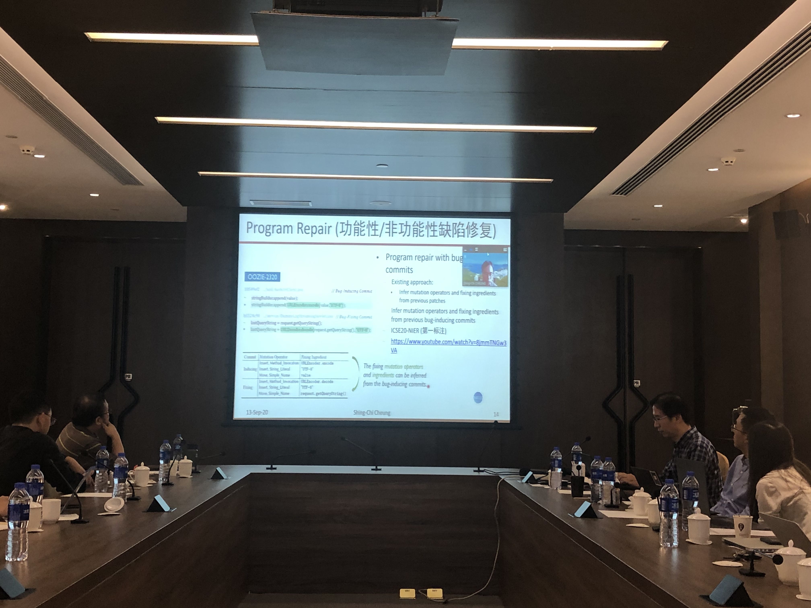

项目阶段进展研讨会在南京大学召开
2020年9月14日
2020年9月13日，国家自然科学基金重点项目“自成长复杂软件系统构建方法与运行支撑研究”项目阶段进展研讨会在南京大学召开。首先，与同步召开的国家重点研发计划“云计算与大数据”重点专项“可持续演化的智能化软件理论、方法和技术”年度进展会议参会人员一起举行了系列学术报告与交流，之后项目负责人、南京大学许畅教授梳理了以软件成长线环境虚拟线和质量保障线为研究主线的项目研究内容。随后许畅教授和左志强助理研究员，南方科技大学刘烨庞副研究员，以及广州港科大霍英东研究院张成志教授分别介绍了南京大学团队、南方科技大学团队和广州港科大霍英东研究院团队在软件自成长和持续演化的基础理论、功能增强、程序分析、缺陷修复和非确定分析等方面的研究进展。全体参会人员就项目后续研讨、项目原型系统和工具链集成、以及项目前瞻性研究安排等问题进行了讨论。南京大学马晓星教授、蒋炎言助理研究员、秦逸助理研究员，东北大学王莹副教授等也参加了会议。
项目参会人员与重点研发计划“可持续演化的智能化软件理论、方法和技术”项目年度进展会议参会人员合影

许畅教授做进展报告

刘烨庞副研究员做进展报告
张承志教授做线上进展报告